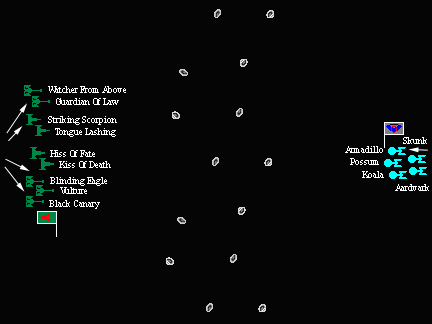

| Round: | 3 |
|---|---|
| Game: | 2 |
| Opponents: | 2 Kent Jakway / Klingon Squadron 2 |
| 3 Art Perlman / Independent (Orion) Squadron 1 | |
| Victor: | 2 Kent Jakway / Klingon Squadron 2 |
| Play Date: | 3 March 2003 |
| Play Location: | The Keep, Fort Wayne, Indiana |
Order of Battle
2 Kent Jakway / Klingon Squadron 2
9 Ships / Combat Efficiency: 299.6
| Ship Name | Class Name | Type | Class | |||
|---|---|---|---|---|---|---|
| Vulture | D-18E Gull NC | Destroyer | IX | |||
| Blinding Eagle | D-18E Gull NC | Destroyer | IX | |||
| Black Canary | D-18E Gull NC | Destroyer | IX | |||
| Guardian of Law | D-18A Gull | Destroyer | VII | |||
| Watcher From Above | D-18A Gull | Destroyer | VII | |||
| Kiss of Death | D-19B Viper's Tongue | Destroyer | VIII | |||
| Hiss of Fate | D-19B Viper's Tongue | Destroyer | VIII | |||
| Tongue Lashing | D-2B Stingtongue | Destroyer | VII | |||
| Striking Scorpion | D-2B Stingtongue | Destroyer | VII |
3 Art Perlman / Independent (Orion) Squadron 1
5 Ships / Combat Efficiency: 295.2
| Ship Name | Class Name | Type | Class | |||
|---|---|---|---|---|---|---|
| Possum | Guardian Mk I | Gunboat | V | |||
| Armadillo | Guardian Mk I | Gunboat | V | |||
| Koala | Guardian Mk I | Gunboat | V | |||
| Skunk | Guardian Mk I | Gunboat | V | |||
| Aardvark | Guardian Mk II | Gunboat | V |
Battle Description
The battle was, at its heart, a slaughter. The Orions knew they could not possibly defeat the Klingon force. The only question was how much damage they might do. [This game also clearly demonstrated the total inadequacy of Combat Efficiency as a method for comparing forces within the STCS.]
Both sides moved at their maximum speeds towards each other. The Orions remained in a tight group. The Klingons spread out with the D-18Es and D-19Bs on the right, and the D-2Bs and D-18As on the left.
As the two squadrons entered the asteroid belt things became really messy.
The Orions continued to huddle up. The Klingons spread out to flank the Orions, and the D-19s activated their cloaks to get closer safely.
Neither side could get locks; the Orions missed four of five attempts; the Klingons missed two of three. The Aardvark, which did have a lock, hit the Blinding Eagle for moderate damage, knocking the target's sensors out. They took no damage in return.
No one is quite sure why the Orions made their next maneuver. Apparently knowing they would be outmaneuvered, most of the ships tried to be able to shoot in all directions, while the Aardvark charged forward. The main result of the move was to allow the Klingons to turn the Orions' right flank. To the amazement of the D-19s, they did not even have to maneuver. Their locked target moved immediately in front of them, and then turned to face away.
Orion fire did light damage to the Hiss of Fate and the already damaged Blinding Eagle, although the Blinding Eagle was able to get its sensors back on-line.
Klingon fire was heavy but limited, as many ships did not have locks. The Possum took serious damage which saw its impulse engine destroyed along with most of the starboard warp engine. The Aardvark had its impulse and starboard warp engines completely ripped off the ship just prior to its warp core shutting down.
Since huddling up didn't seem to help, the Orions decided to scatter. The only (partially) saving grace for them was that the Klingons were still having trouble getting locks.
Orion fire was relatively light since most of their weapons were recharging. They did do light damage to the Tongue Lashing and added damage on the Blinding Eagle.
Although many of the Klingon weapons were also recharging, there were so many of them that the Orions still took many hits. Possum took two photon torpedoes and four disrupter hits, which knocked out its starboard warp engine and smashed its warp core. Six photon torpedoes tore into the Possum, almost destroying its warp engines and cracking its warp core. The Armadillo suffered fire from its rear, losing its impulse engine and taking moderate damage to its starboard warp engine. Finally, the Skunk suffered light damage. Only the Koala was not hit.
After the first phase of Turn 3 the Orion player conceded defeat. At this point he had only three ships left. While one was undamaged, one had lost a significant portion of its power, and the other had been hit in both its engines and superstructure. It was also clear that the Klingons still had almost half of their total weaponry available for later in the turn.